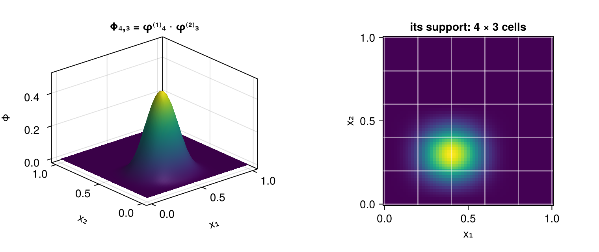

Tensor Products
On a box $\Omega = \Omega_1 \times \dots \times \Omega_D$ the natural spline space is the tensor product of $D$ one-dimensional spaces. Everything about it follows from the one-dimensional case, but the bookkeeping does not — and the bookkeeping is where a hand-rolled tensor-product spline reliably goes wrong.
using SimpleSplines
using CairoMakie
using LinearAlgebra
using Random
Random.seed!(1234)The space
Given one basis per axis, the product basis functions are the products
\[\Phi_{i_1 \dots i_D}(x) = \prod_{d=1}^{D} \phi^{(d)}_{i_d}(x_d) , \qquad 1 \le i_d \le N_d ,\]
and they span
\[\mathcal{S}^{p_1} \otimes \dots \otimes \mathcal{S}^{p_D} , \qquad N = \dim = \prod_{d=1}^{D} N_d .\]
Each factor is an independent basis, so degree, mesh, domain and boundary condition are all per axis, and nothing is shared between them:
B = BSplineBasis(UniformMesh(12, 0 .. 2π), 3, Periodic()) ⊗
BSplineBasis(UniformMesh(9, -10 .. 10), 4, Dirichlet())
ndims(B), size(B), nbasis(B), degree(B), boundary(B)(2, (12, 11), 132, (3, 4), (Periodic(), (Dirichlet(), Dirichlet())))The dimension count is per axis too: $12$ for the periodic cubic axis ($n$), and $9 + 4 - 2 = 11$ for the Dirichlet quartic one ($n + p$ less one per constrained end).
xs = range(0, 1; length = 61)
Bp = BSplineBasis(UniformMesh(5, 0 .. 1), 3) ⊗ BSplineBasis(UniformMesh(5, 0 .. 1), 2)
Z = [evaluate(Bp, (4, 3), (x, y)) for x in xs, y in xs]
fig = Figure(size = (760, 320))
ax1 = Axis3(fig[1, 1]; xlabel = "x₁", ylabel = "x₂", zlabel = "Φ",
title = "Φ₄,₃ = φ⁽¹⁾₄ ⋅ φ⁽²⁾₃")
surface!(ax1, xs, xs, Z)
ax2 = Axis(fig[1, 2]; xlabel = "x₁", ylabel = "x₂", aspect = 1,
title = "its support: 4 × 3 cells")
heatmap!(ax2, xs, xs, Z)
vlines!(ax2, breakpoints(bases(Bp)[1]); color = (:white, 0.5))
hlines!(ax2, breakpoints(bases(Bp)[2]); color = (:white, 0.5))
fig
A product basis function is supported on a box of $\prod_d (p_d + 1)$ cells, so that is how many are nonzero at any point — $64$ for cubics in three dimensions, against $N = \prod_d N_d$ in total.
Coefficients are an array, and the flattening matters
A spline in this basis is $u_h = \sum_I \hat{u}_I \Phi_I$ with $\hat{u}$ a $D$-dimensional array of size size(B). That is the shape in which the Kronecker structure of every operator is visible, and it is what l2_projection returns and Spline holds.
Sooner or later the array has to be flattened — to hand it to a linear solver, or to a time integrator written against vectors. The convention here is that the first axis varies fastest, which is vec, LinearIndices(B), and Julia's column-major order:
LinearIndices(Bp)[1:3, 1:3]3×3 Matrix{Int64}:
1 9 17
2 10 18
3 11 19Three things have to agree on that convention or the results are silently wrong: the evaluation, the mass matrix and the projection. They do, and the visible consequence is the reversed factor order in the assembled Kronecker product:
\[\mathbb{M} = \mathbb{M}^{(D)} \otimes \dots \otimes \mathbb{M}^{(1)} ,\]
with axis $1$ innermost. This is not a choice that can be made differently in one place:
Q = TensorProductQuadrature(Bp)
op = mass_operator(Q)
M1, M2 = map(mass_matrix, mass_factors(op))
maximum(abs, Matrix(op) - kron(Matrix(M2), Matrix(M1)))0.0û = randn(size(Bp)...)
maximum(abs, Matrix(op) * vec(û) - vec(op * û))3.469446951953614e-18The Kronecker structure is used, not just noted
The mass matrix is never assembled. Its inverse factorises exactly —
\[\mathbb{M}^{-1} = \left( \mathbb{M}^{(D)} \right)^{-1} \otimes \dots \otimes \left( \mathbb{M}^{(1)} \right)^{-1}\]
— which is an identity, not an approximate splitting, so a solve is $D$ sweeps of one-dimensional solves, each factor keeping whatever representation it earned on its own axis:
map(f -> nameof(typeof(f)), mass_factors(mass_operator(
TensorProductQuadrature(B))))(:CirculantMass, :BandedMass)maximum(abs, op \ (op * û) - û)3.3861802251067274e-15What that buys, for a cubic basis with $N_d = n$ per axis:
| dense Cholesky of $\mathbb{M}$ | KroneckerMass | |
|---|---|---|
| storage | $O(N^2) = O(n^{2D})$ | $O\!\left(\sum_d N_d p_d\right) = O(D n p)$ |
| factorisation | $O(N^3)$ | $D$ banded factorisations, $O(D n p^2)$ |
| one solve | $O(N^2)$ | $O(N \sum_d p_d)$ |
At $D = 2$ and $n = 41$ that is a $1681 \times 1681$ dense factorisation avoided; at $D = 3$ it is a $68921 \times 68921$ one, which does not fit. The factored form is the only reason a three-dimensional velocity space is tractable at all.
[(D, prod(ntuple(_ -> 41, D)), prod(ntuple(_ -> 41, D))^2 * 8 / 2^30) for D in 1:3]3-element Vector{Tuple{Int64, Int64, Float64}}:
(1, 41, 1.2524425983428955e-5)
(2, 1681, 0.021053560078144073)
(3, 68921, 35.39103449136019)The third column is the memory, in gibibytes, that the dense mass matrix of a $41$-per-axis basis would need.
The load vector factorises too
An $L^2$ projection needs $L_I = \int_\Omega f \, \Phi_I$, and since $\Phi_I$ is a product the quadrature over the $D$-dimensional grid contracts one axis at a time. With $\Phi_k$ the sparse $N_k \times Q_k$ tabulation of axis $k$,
\[L_{i_1 \dots i_D} = \sum_{q_1 \dots q_D} F_{q_1 \dots q_D} \prod_{k=1}^{D} D^{d_k} \phi^{(k)}_{i_k}(x_{q_k}) \, w_{q_k} ,\]
which contract evaluates as $D$ sparse matrix products, reshaping so that the axis being contracted is first and cycling it to the back afterwards. After $D$ steps the axes are back in order. There is no $D$-dimensional tabulation anywhere.
The integrand need not be separable — only the basis is, and that is enough. This is the point most easily missed. A non-separable $f$ is sampled on the product grid and contracted; nothing about the method assumes it factorises:
g(x) = sin(x[1]) * exp(-x[2]^2 / 8) + cos(2x[1]) * x[2] / 20 # not separable
errs = Float64[]
pts = [(2π * rand(), 20rand() - 10) for _ in 1:400]
for n in (8, 16, 32)
Bn = BSplineBasis(UniformMesh(n, 0 .. 2π), 3, Periodic()) ⊗
BSplineBasis(UniformMesh(n, -10 .. 10), 3)
Qn = TensorProductQuadrature(Bn)
ĝ = l2_projection(Qn, g)
push!(errs, maximum(abs(evaluate(Bn, ĝ, x) - g(x)) for x in pts))
end
errs, errs[1] / errs[2], errs[2] / errs[3]([0.010266450024175588, 0.0008479804663206192, 3.7878410182545785e-5], 12.106941647750022, 22.386907534766735)Cubics give fourth-order convergence, so the error should fall by roughly $2^4 = 16$ per refinement.
Derivatives are a multi-index
There is no scalar notion of "the derivative order" on a product basis: $\partial_1 \Phi$ and $\partial_2 \Phi$ are different objects. The order is therefore a per-axis tuple, and
\[D^{d} \Phi_I = \prod_{k=1}^{D} D^{d_k} \phi^{(k)}_{i_k} ,\]
so the gradient component $\partial_k$ is d = ntuple(i -> i == k ? 1 : 0, D). For a Spline, derivative(s, k::Integer) builds that tuple.
b1, b2 = bases(Bp)
evaluate(Bp, (4, 3), (0.3, 0.4), (1, 2)) ≈
evaluate(b1, 4, 0.3, 1) * evaluate(b2, 3, 0.4, 2)trueWhat separates and what does not
| quantity | separable? |
|---|---|
| the mass matrix $\int \Phi_I \Phi_J$ | yes — $\mathbb{M}^{(D)} \otimes \dots \otimes \mathbb{M}^{(1)}$ |
| a pure derivative matrix $\int D^a \Phi_I \, D^b \Phi_J$ | yes — one factor is a one-dimensional mixed matrix, the rest are mass matrices |
| the Laplacian $\int \nabla\Phi_I \cdot \nabla\Phi_J$ | yes as a sum of $D$ separable terms, $\sum_k \mathbb{M} \otimes \dots \otimes \mathbb{K}^{(k)} \otimes \dots \otimes \mathbb{M}$ |
| the load vector $\int f \, \Phi_I$ for arbitrary $f$ | yes as a contraction, though not as a product |
| $\int f \, D^a\Phi_I \, D^b\Phi_J$ with a non-separable $f$ | no |
The last row is where the tensor-product structure stops paying. Such a matrix is still $\Phi_a \, \mathrm{diag}(f \odot w) \, \Phi_b^{\mathsf T}$ with a $D$-dimensional tabulation $\Phi$, but no sequence of one-dimensional contractions gives it, so it needs the Kronecker product of the one-dimensional tables formed explicitly. SimpleSplines does not provide that; a package that needs it builds it from basis_values(quadratures(q)[k], d) and pays the storage.
One boundary condition per axis
The condition is a property of an axis. Passing a $D$-tuple gives one condition per axis, not the two ends of one axis:
B2 = BSplineBasis(UniformMesh(8, 0 .. 1), 3, Dirichlet()) ⊗
BSplineBasis(UniformMesh(8, 0 .. 1), 3, Neumann())
boundary(B2), size(B2)(((Dirichlet(), Dirichlet()), (Neumann(), Neumann())), (9, 9))To impose different conditions at the two ends of a single axis, build that axis's basis with a pair and then take the product:
axis = BSplineBasis(UniformMesh(8, 0 .. 1), 3, (Dirichlet(), Neumann()))
boundary(axis), nbasis(axis)((Dirichlet(), Neumann()), 9)polynomial_reproduction of the product is the minimum over the axes, because a polynomial lies in the span only if its restriction to each axis lies in that axis's span. One periodic or Dirichlet axis is enough to lose it:
polynomial_reproduction(B2), polynomial_reproduction(Bp), polynomial_reproduction(B)(-1, 2, -1)